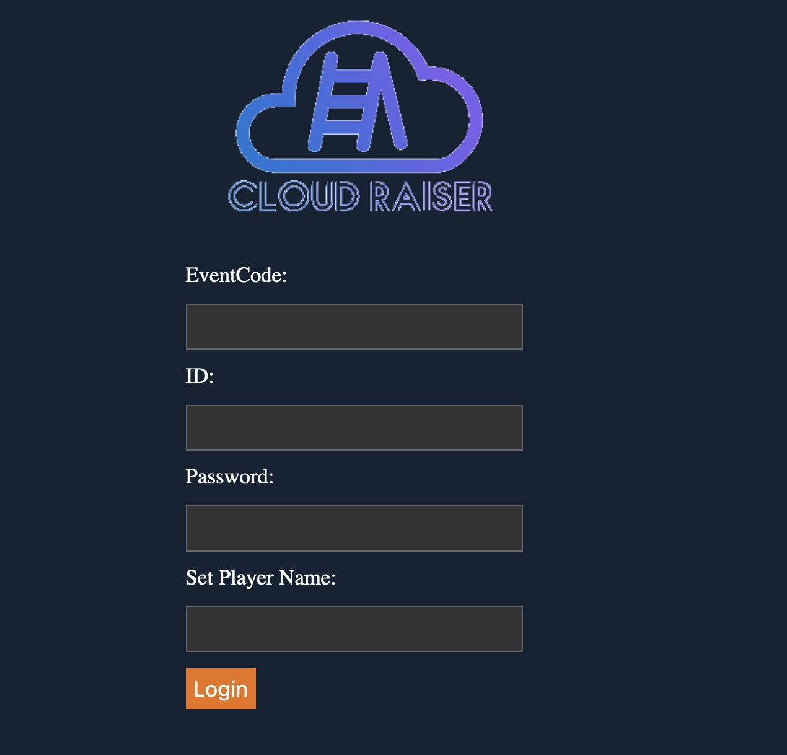
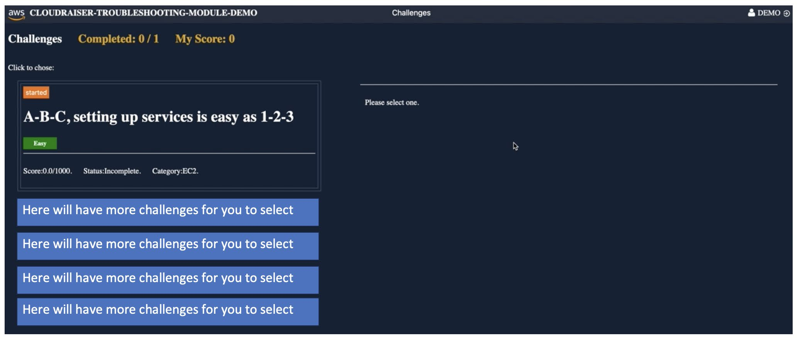
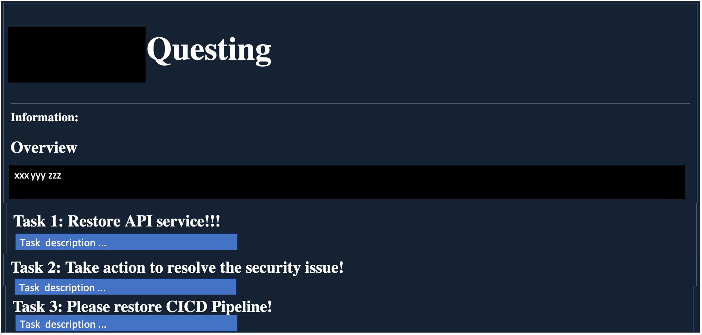

WSC2024_TP53_main_document_actual_en
Test Project
Cloud Computing
Independent Test Project Designers: Shawn Xu, Xiaowei Wang, Qiang Wang, Xu Chen
Independent Test Project Validator: Chit Boon Lee, SCM

Date: 07.08.24
WSC2024_TP53_main_document_actual_en
Version: 1.0
© WorldSkills International
2 of 7
Contents
Contents ..................................................................................................................................................... 3
Introduction ................................................................................................................................................ 3
C1 and C2 – Well-architecting .................................................................................................................... 3
AWS Services ...................................................................................................................................................................... 4
C3 – troubleshooting and QUEST .................................................................................................................... 4
Login to Cloud Raiser......................................................................................................................................................... 5
TOUBLESHOOTING MODULE ............................................................................................................................................. 5
clues .................................................................................................................................................................................... 6
QUEST MODULE ................................................................................................................................................................. 7
Date: 07.08.24
WSC2024_TP53_main_document_actual_en
Version: 1.0
© WorldSkills International
3 of 7
Contents
This Test Project consists of the following documentation/files:
1.
WSC2024_TP53_main_document_actual_en
2.
WSC2024_TP53_day1_actual_en
3.
WSC2024_TP53_day2_actual_en
4.
WSC2024_TP53_day3_actual_en
Introduction
Cloud adoption is now critical for businesses of all sizes. To stay ahead, companies leverage the cloud's agility to
build solutions that scale seamlessly, ensuring a positive customer experience even under peak loads or outages.
These Test Projects evaluate your ability to design, deploy, manage, and secure cloud-native applications
effectively, along with your troubleshooting skills and composure under pressure.
C1 and C2 – Well-architecting
Each day begins with developing solutions that meet the specified requirements. For information about your
account permissions, please refer to the HengHaTeamRole in your IAM console.
Infrastructure Cost
To optimize resource usage, deploy only the resources required to handle the current load. Deploying excess
instances will result in penalties.
Personal Event Dashboard
Log in to the Cloud Raiser Platform using the provided credentials to access your personal event dashboard.
Your event dashboard provides real-time insights into your solution's performance against evaluation criteria
such as scalability, performance, resource optimization and etc. Marks awarded for each criteria contribute to
your overall score.
Please note: The personal dashboard is not intended for competitor comparisons based on overall scores. It
focuses on individual performance against the defined evaluation criteria.


Date: 07.08.24
WSC2024_TP53_main_document_actual_en
Version: 1.0
© WorldSkills International
4 of 7
The competition dashboard provides a central hub for managing your participation. Here's a breakdown of the
key components:
1. Score Events and Scoreboard: This section provides access to individual activities that contribute to your
overall score. Think of these events as milestones you need to achieve for a functioning application.
2. AWS Console: Click this button to access a temporary AWS account provided specifically for this
competition. This account will be closed and inaccessible after each day.
3. Inputs: This section allows you to submit your answers according to the event requirements. These answers
might include public IP addresses, ALB DNS names, S3 URLs, API endpoints, or other relevant details.
Score Events and Scoreboard
For a deeper dive into your performance, click the "Score Events" button on the player dashboard. This will
show you a point-by-point breakdown of your score.
This page provides a detailed breakdown of your score, divided into two sections:
1. Event List: Each row represents a score event, including its source (where the points came from), the points
awarded/deducted, and the reason.
2. Reason for Point Changes: Pay close attention to the reason column, especially for point deductions. This
will help you identify and fix any issues impacting your score.
AWS Services
Even though you have access to most services and your IAM role grants permissions for this competition,
encountering "Permission Denied" errors is still a possibility. Remember, permissions can vary across regions, so
double-check you're working in the designated us-east-1 region for the competition. Additionally, exceeding
resource limits associated with your permissions can also trigger errors.
C3 – troubleshooting and QUEST
The competition goes beyond testing your architectural prowess. We'll also assess your proficiency in crucial
cloud computing skills through targeted challenges within Cloud Raiser during C3. Get ready to showcase your
technical depth alongside your creative problem-solving abilities!

Date: 07.08.24
WSC2024_TP53_main_document_actual_en
Version: 1.0
© WorldSkills International
5 of 7
Login to Cloud Raiser
We will provide you with login credentials.
TOUBLESHOOTING MODULE
Once logged in, you'll have the flexibility to tackle the challenges in any order that suits your approach!


Date: 07.08.24
WSC2024_TP53_main_document_actual_en
Version: 1.0
© WorldSkills International
6 of 7
Once you choose a challenge, a dedicated screen will appear. Here, you'll find detailed task instructions
alongside a convenient button to access your AWS account through the AWS Console.
clues
Each challenge provides detailed instructions to equip you for success. Remember, while helpful clues are
available, using them will deduct points. Craft your approach strategically! Consider if the potential point
reduction outweighs the time saved by using a clue. This competition rewards both problem-solving skills and
strategic decision-making.
Once you finish a prerequisite task, the next steps will unlock, guiding you towards completion. Remember,
you'll need to complete all tasks to mark the challenge as finished.


Date: 07.08.24
WSC2024_TP53_main_document_actual_en
Version: 1.0
© WorldSkills International
7 of 7
QUEST MODULE
This challenge combines Well-Architecting and Troubleshooting. You'll see all tasks at once, and you are free to
complete them in any sequence. Analyze your performance with ScoreEvents. QUEST tests your ability to
strategize using both architectural knowledge and troubleshooting skills.
Good luck!

